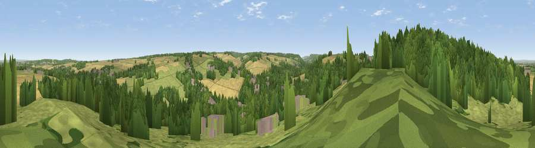

Viewpoint near Farningham
#26217 in England · top 27% of its area beats it · near FarninghamThe view, rendered

A 360° render of this exact spot computed from the terrain model, tree cover and land cover — summer colours, afternoon light, calibrated against photographs of famous viewpoints. Real trees, hedges and buildings will differ in detail.
The panorama
Grey silhouette: terrain skyline in each direction (720 bearings, Earth curvature and refraction included). Dashed green: skyline with trees (+15 m) and buildings (+8 m) as obstacles. Blue strip: how far the ground is visible on each bearing.
Where the view opens
Wedge length = distance to the farthest visible ground on that bearing (vegetation-aware). Rings at 10, 25 and 50 km.
What fills the view
42% woodland · 35% grassland · 18% cropland · 5% built-up
Angular shares of the visible panorama (visual magnitude), not map area. Landscape diversity 0.52 (0–1 Shannon).
Key numbers
More beautiful places nearby
The staircase of upgrades: each row has a higher view potential than everything closer. Driving times are estimates from straight-line distance, calibrated against real road routing — check an actual route before setting out.
| Place | Direction | Drive | Score |
|---|---|---|---|
| Farningham Wood | WNW · 1 km | ~2 min | 49.5 |
| Viewpoint near Hextable | NW · 5 km | ~10 min | 50.0 |
| Viewpoint near Well Hill | SW · 7 km | ~14 min | 54.4 |
| Viewpoint near Ebbsfleet Valley | NE · 7 km | ~15 min | 56.1 |
| Viewpoint near Wrotham | SSE · 9 km | ~18 min | 65.1 |
| Viewpoint near Wrotham | SE · 10 km | ~20 min | 66.6 |
| Viewpoint near Shipbourne | S · 15 km | ~26 min | 69.1 |
| Box Hill | WSW · 38 km | ~57 min | 70.4 |
51.38700, 0.22367 · source: screening · position refined by local search. Computed location — check access rights before visiting.